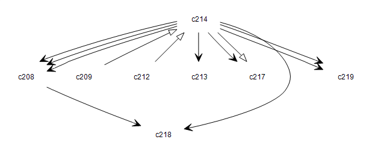

com.octo.captcha.engine.bufferedengine
Class BufferedEngineContainer

java.lang.Object
 com.octo.captcha.engine.bufferedengine.BufferedEngineContainer
com.octo.captcha.engine.bufferedengine.BufferedEngineContainer
- All Implemented Interfaces:
- CaptchaEngine
- Direct Known Subclasses:
- QuartzBufferedEngineContainer, SimpleBufferedEngineContainer
public abstract class BufferedEngineContainer
- extends java.lang.Object
- implements CaptchaEngine
Abstact class that encapsulate a CaptchaEngine to allow buffering. A BufferedEngineContainer has mainly one function
: to provide cached captchas to increase performances. This is done through two embedded buffers : a disk buffer and
a memory buffer. When captchas are requested, the bufferedEngine take them either from the memory buffer if not empty
or directly from the engine. Some good periods are defined with a scheduler to feed the disk buffer with captchas and
some others to swap captchas from the disk buffer to the memory buffer.
- Author:
- Benoit Doumas
| Methods inherited from class java.lang.Object |
clone, equals, finalize, getClass, hashCode, notify, notifyAll, toString, wait, wait, wait |
persistentBuffer
protected CaptchaBuffer persistentBuffer
volatileBuffer
protected CaptchaBuffer volatileBuffer
engine
protected CaptchaEngine engine
config
protected ContainerConfiguration config
volatileMemoryHits
protected int volatileMemoryHits
persistentMemoryHits
protected int persistentMemoryHits
persistentToVolatileSwaps
protected int persistentToVolatileSwaps
persistentFeedings
protected int persistentFeedings
BufferedEngineContainer
public BufferedEngineContainer(CaptchaEngine engine,
CaptchaBuffer volatileBuffer,
CaptchaBuffer persistentBuffer,
ContainerConfiguration containerConfiguration)
- Construct an BufferedEngineContainer with and Captcha engine, a memory buffer, a diskBuffer and a
ContainerConfiguration.
- Parameters:
engine - engine to generate captcha for buffersvolatileBuffer - the memory buffer, which store captcha and provide a fast access to thempersistentBuffer - the disk buffer which store captchas not in a volatil and memory consuming waycontainerConfiguration - the container configuration
getNextCaptcha
public Captcha getNextCaptcha()
- Specified by:
getNextCaptcha in interface CaptchaEngine
- See Also:
CaptchaEngine.getNextCaptcha()
getNextCaptcha
public Captcha getNextCaptcha(java.util.Locale locale)
- Specified by:
getNextCaptcha in interface CaptchaEngine
- See Also:
CaptchaEngine.getNextCaptcha(java.util.Locale)
getFactories
public CaptchaFactory[] getFactories()
- Specified by:
getFactories in interface CaptchaEngine
- Returns:
- captcha factories used by this engine
setFactories
public void setFactories(CaptchaFactory[] factories)
- Specified by:
setFactories in interface CaptchaEngine
- Parameters:
factories - new captcha factories for this engine
swapCaptchasFromPersistentToVolatileMemory
public void swapCaptchasFromPersistentToVolatileMemory()
- Method launch by a scheduler to swap captcha from disk buffer to the memory buffer. The ratio of swaping for each
locale is defined in the configuration component.
feedPersistentBuffer
public void feedPersistentBuffer()
- Method launch by a scheduler to feed the disk buffer with captcha. The ratio of feeding for each locale is
defined in the configuration component.
getConfig
public ContainerConfiguration getConfig()
getPersistentBuffer
public CaptchaBuffer getPersistentBuffer()
getPersistentFeedings
public java.lang.Integer getPersistentFeedings()
getPersistentMemoryHits
public java.lang.Integer getPersistentMemoryHits()
getPersistentToVolatileSwaps
public java.lang.Integer getPersistentToVolatileSwaps()
getVolatileBuffer
public CaptchaBuffer getVolatileBuffer()
getVolatileMemoryHits
public java.lang.Integer getVolatileMemoryHits()
closeBuffers
public void closeBuffers()
Copyright © 2003-2009 JCaptcha corp.. All Rights Reserved.